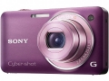

器材库 > 不可换镜头数码相机 > DSC-WX5

规格总览
发布日期
2010-07-08
厂家推荐价格
35,000.00 （日元）
3D拍摄
是
影像规格
影像传感器
Exmor R CMOS
影像传感器尺寸
1/2.3英寸
总像素
1280万
有效像素
1220万
影像处理器
BIONZ
静态图像格式
JPEG
静态图像尺寸
12M(4000×3000), 8M(3264×2448), 5M(2592×1944), VGA(640×480)
画幅比
4:3, 16:9
短片格式
MPEG4-AVC/H.264
短片尺寸
1920×1080（60fields/sec、17Mbps）
音频格式
立体声
防抖系统
光学防抖
镜头和对焦
镜头结构
6片/5组
非球面镜片
5片
焦距
4.25mm-21.25mm
等效35mm画幅焦距
24mm-120mm
最大光圈
f/2.4-5.9
光学变焦
5倍
数码变焦
10倍
最近对焦距离
5cm
自动对焦系统
多点AF
对焦模式
9点/中央/点/追踪
曝光控制
测光模式
中央重点测光, 评价测光, 点测光
场景模式
夜景/夜景人像/手持夜景拍摄/人物防抖/逆光补正HDR/风景/运动/高速连拍/食物/派对/运动/焰火/雪/自拍/水下/宠物/美肤
快门速度
2-1/1600
曝光补偿
±2EV以1/3EV级调整
闪光灯
内置闪光灯
固定
闪光涵盖范围
W：0.2-5.1m T：0.9-2.1m
取景规格
LCD类型
彩色TFT LCD
LCD尺寸
2.8英寸
LCD像素
46万
文件输入/输出
内置存储容量
32MB
存储卡
SD/SDHC, SDXC
数据接口
USB2.0
视频/音频接口
AV 输出, HDMI 输出
电源
电池
锂离子电池 NP-BN1
外观
颜色
银色, 黑色, 褐色, 香槟色, 紫色
尺寸
91.7×51.9×21.5mm
重量
146g
该产品暂无存档的网友点评
产品图 / 样片
DSC-WX5
评测 / 相关文章
- 详细内容 （存档）
- 3D全景拍摄 索尼口袋机WX5评测 （存档）
- ［行情］DC人气榜2010第五十二期 （存档）
- ［行情］DC人气榜2010第五十一期 （存档）
- ［行情］DC人气榜2010第四十九期 （存档）
- ［行情］DC人气榜2010第四十八期 （存档）
- ［行情］DC人气榜2010第四十七期 （存档）
- ［行情］DC人气榜2010第四十六期 （存档）
- ［行情］DC人气榜2010第四十五期 （存档）
- ［资讯］日本影音家电权威大奖VGP 2011 公布 （存档）
- ［行情］DC人气榜2010第三十五期 （存档）
相关文章
- ［行情］DC人气榜2010第五十二期 （存档）
- ［行情］DC人气榜2010第五十一期 （存档）
- ［行情］DC人气榜2010第四十九期 （存档）
- ［行情］DC人气榜2010第四十八期 （存档）
- ［行情］DC人气榜2010第四十七期 （存档）
- ［行情］DC人气榜2010第四十六期 （存档）
- ［行情］DC人气榜2010第四十五期 （存档）
- ［资讯］日本影音家电权威大奖VGP 2011 公布 （存档）
- ［行情］DC人气榜2010第三十五期 （存档）
- ［专题］有何不同，DC首批秋季新品浅析 （存档）